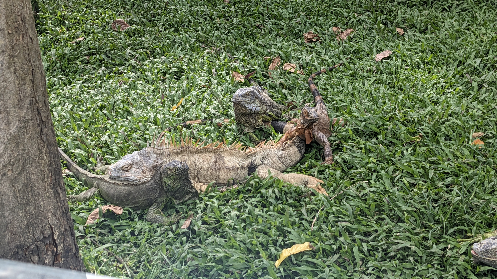

Photography Gallery
Original photographs captured during university training courses, city excursions, and weekend sessions.
The images displayed below were originally curated and styled in Course 3 and Course 4 of the Web Design Specialization to test responsive image loading, semantic figure formatting, and keyboard accessible focus states.

Khanh Linh Pagoda Gate
Festive entrance gate and ornate roof architecture of Khanh Linh Pagoda photographed under clear morning skies.

Student Dormitories
Residential quarters captured during undergraduate military and soft-skills training sessions at the university campus.
Independence Palace Courtyard
Open grass lawn and landmark facade adorned with national banners during an afternoon city tour.

Botanical Garden Fauna
Green and brown iguanas resting in shaded ground plots at the zoological and botanical garden.

Study Workspace
Coffee cup and notebook arranged for a quiet development and reading session.

Resting Domestic Cat
Domestic pet resting indoors, captured as a reference subject for image sizing and contrast tests.